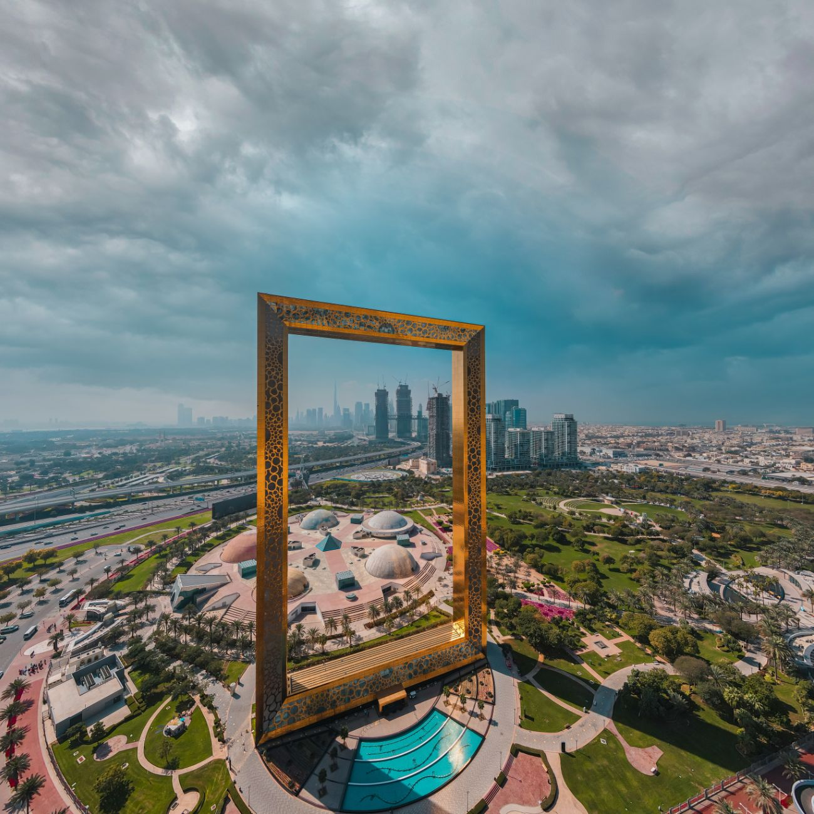
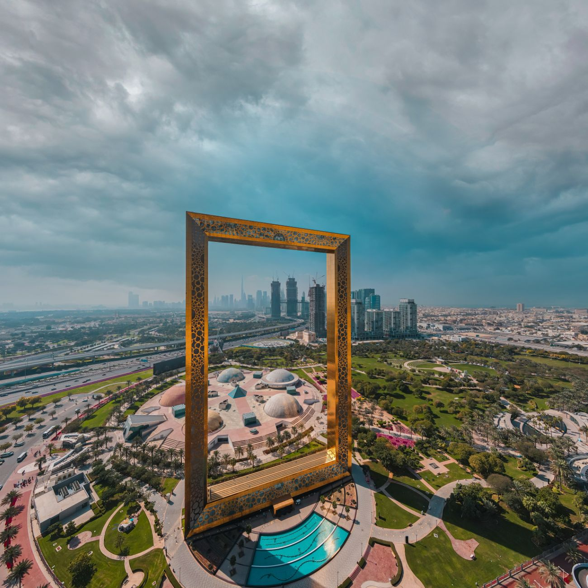

Dubai is a city of superlatives, home to some of the most spectacular attractions in the world. Whether you’re marveling at groundbreaking architecture, shopping in opulent venues, or seeking adrenaline-pumping activities, our curated guide will help you find your next adventure in this dynamic city.
Architectural Wonders
Dubai’s skyline is a testament to its architectural innovation. From towering skyscrapers to ambitious urban projects, each structure tells a story of vision and grandeur.
- Burj Khalifa: Standing at a staggering height of 828 meters, the Burj Khalifa is not only the tallest building in the world but also a symbol of Dubai’s unyielding ambition. Visit the observation decks for breathtaking views of the cityscape. Learn more.
- Burj Al Arab: Shaped like a sail and situated on its own island, the Burj Al Arab is one of the most luxurious hotels globally. Its distinctive structure and opulent interior are a must-see for architecture enthusiasts. Explore more.
- Dubai Frame: This architectural landmark offers panoramic views of both old and new Dubai. Located in Zabeel Park, it frames the city’s evolution and is a striking sight at sunrise or sunset. Book your tickets.
 

Shopping Paradises
Experience shopping like never before at the Dubai Mall and traditional markets like the Gold and Spice Souks. Dubai offers an unparalleled retail experience that blends its rich traditions with the height of modern luxury.
Dubai Mall:
Not just a shopping center, the Dubai Mall is a giant world of recreation and retail. It stands next to the Burj Khalifa and hosts over 1,200 shops and 150 restaurants. Attractions inside the mall include the Dubai Aquarium and Underwater Zoo, the indoor theme park SEGA Republic, and an Olympic-sized ice skating rink. Explore a wide range of high-fashion brands and catch the latest collections from the world over.
Discover more about Dubai Mall.Gold Souk:
Located in the heart of Dubai's commercial district, Deira, the Gold Souk is famous for its extensive range of fine gold jewelry. It's not only a testament to the region's wealth but also a cultural icon. The Souk features over 300 retailers that trade almost exclusively in jewelry; visitors can find everything from massive gold chains to intricate bridal jewelry, all at bargain prices.
Learn more about the Gold Souk.Spice Souk:
A few steps away from the Gold Souk, the Spice Souk offers an aromatic culinary journey. The narrow lanes of this bustling marketplace are lined with small stores selling a variety of fragrant spices, herbs, rice, and incense. The air is filled with a medley of aromas that draw in chefs, home cooks, and tourists alike. Here, you can find everything from saffron to black tea, dried lemons, and potent chili peppers.
Explore more at the Spice Souk.Global Village:
For a more unique shopping experience, visit the Global Village. It combines cultures of 90 countries across the world in one place. It is not only a place for shopping for unique items from around the world but also a cultural and entertainment park that features live performances, thrilling rides, and culinary delights from its global pavilions.
Discover Global Village.Adventure Activities
Experience the thrill of Dubai’s Adventure Activities, designed for every adrenaline junkie. From sky-high experiences to exhilarating rides through the desert, each activity offers a unique way to view the city's stunning landscapes.
- Skydiving: Leap from the skies over Palm Jumeirah or the vast Arabian desert for an unmatched adrenaline rush. Skydive Dubai provides both tandem and solo jumps, catering to all levels of experience. Learn more about Skydiving.
- Desert Safaris: Explore the dunes in a 4x4, enjoy a sunset barbecue, and relax at a desert camp under the stars. Desert safaris offer a blend of adventure, culture, and relaxation. Explore Desert Safaris.
- Ziplining in Dubai Marina: Soar across the Dubai Marina at exhilarating speeds on the world's longest urban zipline. Experience breathtaking views and a thrilling ride. Discover Ziplining at XLine Dubai Marina.